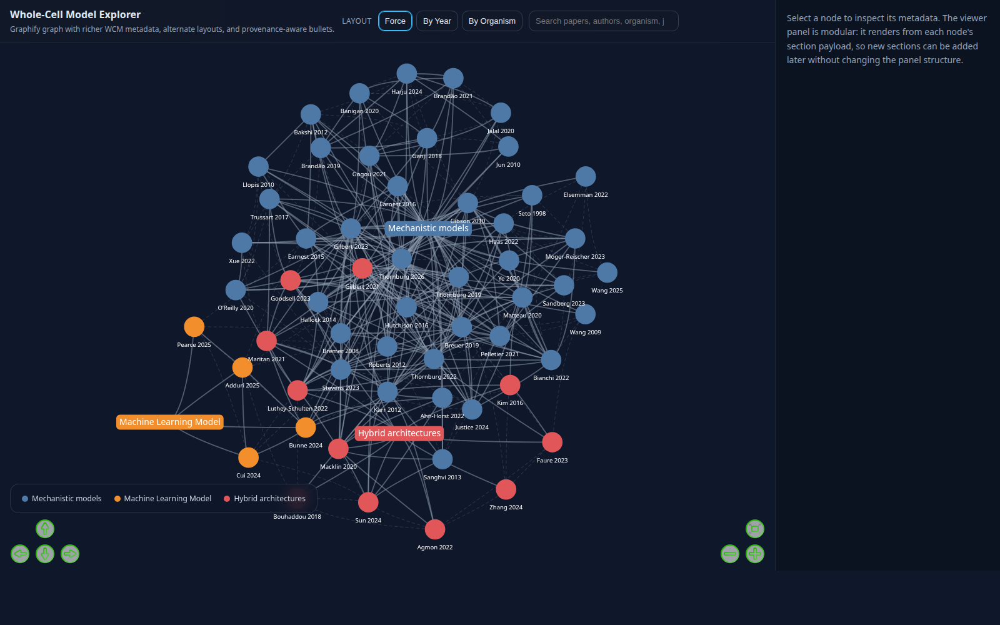
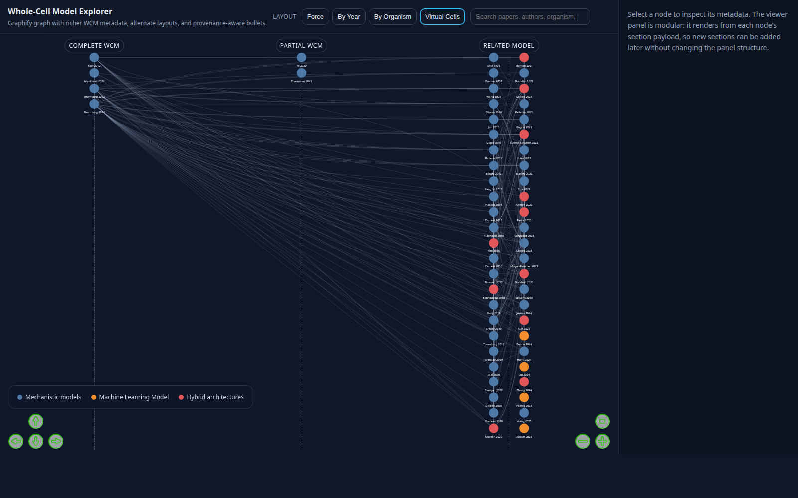

Five viewer layouts in one explorer
The same corpus is visualised through five layered lenses. Switch between them in the toolbar at the top of the live explorer.
- Force — citation/method-class force-directed graph; dot colour encodes method class
- By Year — papers arranged on a horizontal timeline by publication year
- By Organism — papers grouped by modelled organism (E. coli, JCVI-syn3A, etc.) with a Complete/Incomplete WCM split
- Virtual Cells — papers grouped by WCM completeness (Complete · Partial · Related)
- Hybrid Model Summary — non-graph evidence-table view for the three hybrid ML–MM strategies
Three method classes
Mechanistic models
Rule-based, kinetic, stochastic, physical, or simulation-first studies that represent cellular processes explicitly. The majority of the corpus.
Machine learning models
Data-driven or AI-first work where predictive learning is the central modelling strategy.
Hybrid architectures
Workflows that combine mechanistic simulation with data integration, structural constraints, or AI-assisted components — the centrepiece of the Hybrid Model Summary view.
Virtual-cell completeness axis
Each paper is also tagged on a completeness axis: Complete WCM, Partial WCM, or Related Model. The Virtual Cells layout uses this axis directly.
Hybrid Model Summary — three coordinated strategies
A non-graph evidence-table view inside the same explorer. Each paradigm has 3 claims; each claim has a ranked list of supporting papers (corpus + 68 promoted external EXT-NNN papers); click any evidence row to see a multi-sentence paragraph-screenshot stack from the source PDF.
- Embedded ML–MM hybridisation — closure, constraint, emulation / surrogate modelling
- Pipeline ML→MM systems — curation, inference, structural learning
- Parallel ML–MM comparison — matched predictions, agreement / disagreement, foundation-model baselines
Top-1 picks per claim include AlphaMissense (variant effects), DeepONet (emulation), PINNs (constraint), Med-PaLM (matched predictions, foundation models), Sei (regulatory annotation), and GeneCompass (drug discovery). The view also has a TSV download button that exports straight to Google Sheets / Excel.
Preview



How it was built — the agent pipeline
This was the corpus on which the agentic pipeline first ran end-to-end. The Hybrid Model Summary feature added in May 2026 introduced the multi-agent run (discoverer → 3 parallel scorers → reviewer → fetcher / ranker / linker → vision QC) and the multi-sentence paragraph-screenshot system that all subsequent projects reuse.
Architect → ontology + 9 hybrid claims + 5-dim rubric
↓
Discoverer (D) → 89 cross-domain EXT papers (OpenAlex + venue allowlist)
↓
Scorers ×3 → parallel rubric scoring per paradigm
↓
Reviewer (R) → 68 promoted (primary / secondary tiers)
↓
┌────────────┬────────────┬────────────┐
▼ ▼ ▼ ▼
Fetcher (P) Ranker (K) Linker (H) Viewer (V)
↓
multi-sentence paragraph screenshots
↓
QC checker → screenshot quality report
↓
Live explorer (graph.html)